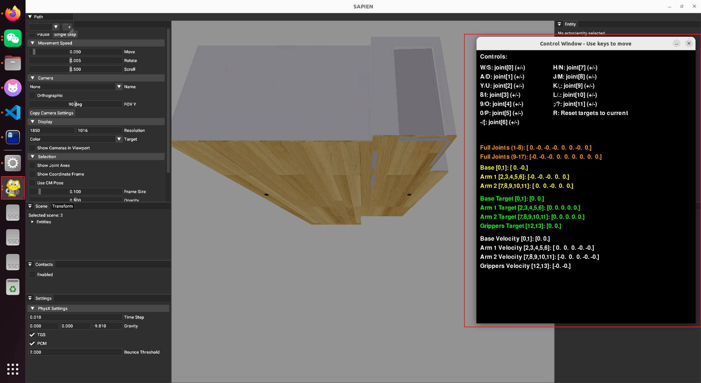

强化学习¶
一、MuJoCo¶
二、ManiSkill + SAPIE¶
这里涉及 ubuntu 配置 nividia 驱动，有以下博客可以参考： Ubuntu 安装 cuda+cudnn 保姆级教程记录 cuDnn 下载官方网站
可以参考的博客有：
- SAPIEN ManiSkill3 入门教程（二）
- github 仓库指引
其中场景的下载可以从 github 中提示的 google drive 链接中下载，这个是最小的，有兴趣的可以下载其他的场景，具体介绍见Scene Datasets（先尝试运行里面的代码下载场景文件，如果提示网络超时，就使用终端中提示的路径如 https://huggingface...直接复制到浏览器即可下载，实测好用！）：

运行 github 代码后会进入以下界面： 
目前探索到的常用操作如下：
wasd按键可以朝向目前屏幕方向前后左右移动- 长按鼠标右键可以更改屏幕朝向
- 转动鼠标滚轮可以释放放大视图
如果需要开始控制机器人关节操作，先点击上图中右侧的终端，使其处于被选中状态，这个时候键盘按键对于关节控制操作，移动操作暂时失效。如需再移动点击其他地方不选中终端即可。
使用期间可以点击左上角的Camera，将None切换为头部或者手臂均可。
三、强化学习训练流程¶
主要参考视频 & 博客： 1. 【LeRobot 训练 SO-101 机械臂 ACT 模型全流程解析】
3.1 准备工作¶
通过在[[../hardware_and_command/hardware_and_command.md]]中配置遥操验证摄像头位置和主从臂是否可以跟随运行。
注意这里的 left 是机械臂的摄像头，front 是深度相机 RGB 摄像头。
不过通过我自己的训练效果看，如果只是一个机械臂的训练可以，将两另一个机械臂的摄像头作为side摄像头替换掉left摄像头，其中side视角需要从侧面看到整个从臂(注意环境不要太杂)
lerobot-teleoperate \
--robot.type=so101_follower \
--robot.port=/dev/ttyACM0 \
--robot.id=my_awesome_follower_arm \
--robot.cameras="{ left: {type: opencv, index_or_path: 2, width: 640, height: 480, fps: 30}, front: {type: opencv, index_or_path: 8, width: 640, height: 480, fps: 30}}" \
--teleop.type=so101_leader \
--teleop.port=/dev/ttyACM1 \
--teleop.id=my_awesome_leader_arm \
--display_data=true
3.2 采集数据¶
同理根据以下命令采集数据集
# 采集数据集，并保存在本地
lerobot-record \
--robot.type=so101_follower \
--robot.port=/dev/ttyACM0 \
--robot.id=my_awesome_follower_arm \
--robot.cameras="{ left: {type: opencv, index_or_path: 2, width: 640, height: 480, fps: 30}, front: {type: opencv, index_or_path: 8, width: 640, height: 480, fps: 30}}" \
--teleop.type=so101_leader \
--teleop.port=/dev/ttyACM1 \
--teleop.id=my_awesome_leader_arm \
--display_data=true \
--dataset.repo_id=CX1103/test \
--dataset.num_episodes=6 \
--dataset.single_task="Grab the black cube" \
--dataset.push_to_hub=false \
--dataset.episode_time_s=30 \
--dataset.reset_time_s=30
需要注意的有：
- 注意你的主从臂端口是否对应
- --dataset.repo_id=CX1103/test 这个路径需要你自己记住，随后运行完，会在你的~/.cache/huggingface/lerobot路径下创建对应文件夹，在该文件夹下 CX1103/test就会记录你录制的数据集，具体可能为~/.cache/huggingface/lerobot
- 这里的--dataset.num_episodes=6，参数不要选择太大，因为这里涉及到后面使用 GPU 训练，如果数据太多，现存不足就会无法训练。经过测试在我使用数量 5 和 6 时，训练时显卡占用情况如下：


经过测试在采集每个数据集的时候，每个episode都只抓去一个小范围物体，且每个episode的范围都不同，最终训练出来的效果范化效果和准确性更高。
3.3 回播数据¶
这里有两种方式，一个是上传HuggingFace的配置方式，一种是存于本地的方式。注意这里的--dataset.repo_id需要与你前面训练时候填写的对应，不然检索不到
lerobot-replay \
--robot.type=so101_follower \
--robot.port=/dev/ttyACM0 \
--robot.id=my_awesome_follower_arm \
--dataset.repo_id=${HF_USER}/record-test \
--dataset.episode=0
lerobot-replay \
--robot.type=so101_follower \
--robot.port=/dev/ttyACM0 \
--robot.id=my_awesome_follower_arm \
--dataset.repo_id=CX1103/test \
--dataset.episode=0
3.4 训练¶
同样提供两种训练的命令，这里以我的电脑为例RTX 3060 6G显存，训练6个episode采集数据，10w步需要8.3小时左右
lerobot-train \
--dataset.repo_id=${HF_USER}/so101_test \
--policy.type=act \
--output_dir=outputs/train/act_so101_test \
--job_name=act_so101_test \
--policy.device=cuda \
--wandb.enable=true \
--policy.repo_id=${HF_USER}/my_policy
lerobot-train \
--dataset.repo_id=CX1102/test \
--policy.type=act \
--output_dir=outputs/train/act_so101_test \
--job_name=act_so101_test \
--policy.device=cuda \
--wandb.enable=false \
--policy.push_to_hub=false\
--policy.repo_id=CX1102/act_so101_test
# --steps=100000默认步数为10w
3.5 评估¶
这里的--dataset.repo_id是评估后，评估文件的存放位置，不是前面采集数据一模一样的路径
lerobot-record \
--robot.type=so100_follower \
--robot.port=/dev/ttyACM1 \
--robot.cameras="{ up: {type: opencv, index_or_path: 2, width: 640, height: 480, fps: 30}, side: {type: intelrealsense, serial_number_or_name: 233522074606, width: 640, height: 480, fps: 30}}" \
--robot.id=my_awesome_follower_arm \
--display_data=true \
--dataset.repo_id=CX1102/eval_so100 \
--dataset.single_task="Put lego brick into the transparent box" \
# <- Teleop optional if you want to teleoperate in between episodes \
# --teleop.type=so100_leader \
# --teleop.port=/dev/ttyACM0 \
# --teleop.id=my_awesome_leader_arm \
--policy.path=CX1102/act_so101_test
lerobot-record \
--robot.type=so101_follower \
--robot.port=/dev/ttyACM0 \
--robot.cameras="{ left: {type: opencv, index_or_path: 2, width: 640, height: 480, fps: 30}, front: {type: opencv, index_or_path: 8, width: 640, height: 480, fps: 30}}" \
--robot.id=my_awesome_follower_arm \
--display_data=true \
--dataset.repo_id=CX1102/eval_so101 \
--dataset.single_task="Put lego brick into the transparent box" \
--policy.path=outputs/train/act_so101_test/checkpoints/last/pretrained_model \
--dataset.push_to_hub=false
注意该评估会剧烈抖动电机，很容易造成机械臂过热，所以请一定不要连续评估模型！